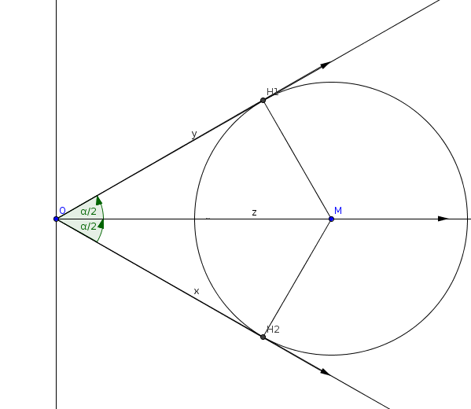
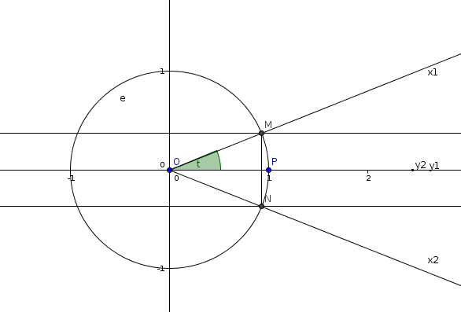
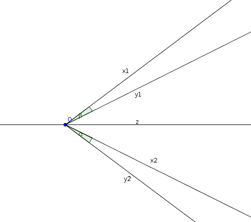

| Choisissez votre langue ! | Choose your language ! |
Définitions
Nous partons du fait que l'application t → eit= cost+isint est un homomorphisme de (ℝ,+) dans le deA toute rotation vectorielle plane nous qu'il correspond une matrice orthogonale unique de la forme :
\( \displaystyle \begin{pmatrix} a & {- b} \\ b & a \\ \end{pmatrix} \)
où a=cos(t) et b=sin(t).t est défini à 2kπ près (k entier relatif) pour raison de périodicité des fonctions sin et cos.
t est la mesure de l'angle de la rotation.
t est donc un élément du ℝ/2πℝ qui est l'ensemble des pour la relation t ≡ t' si et seulement si t-t'=2kπ où k est un entier relatif (revoir les ).
Comme à tout \( \displaystyle \widehat{\left ( Ox,Oy \right )} \) il correspond une et une seule rotation vectorielle r, nous pouvons poser la définition suivante :
Definitions
We start from the fact that the map t → eit= cost+isint is a homomorphism from (ℝ,+) to the of ℂ.To any plane vector rotation we that there corresponds a unique orthogonal matrix of the form:
\( \displaystyle \begin{pmatrix} a & {-b} \\ b&a\\ \end{pmatrix} \)
where a=cos(t) and b=sin(t).t is defined to within 2kπ (k relative integer) because of the periodicity of the sin and cos functions.
t is the measure of the angle of rotation.
t is therefore an element of the ℝ/2πℝ which is the set of for the relation t ≡ t' if and only if t-t'=2kπ where k is a relative integer (review the ).
As with all \( \displaystyle \widehat{\left ( Ox,Oy \right )} \) it corresponds to one and only one vector rotation r, we can set the following definition:
- La mesure de ϖ est π.
- Les mesures des deux angles droits sont π/2 et -π/2.
- The measure of ϖ is π.
- The measures of the two right angles are π/2 and -π/2.
Bissectrice d'un couple de demi-droites
Soient (Ox,Oy) un couple de demi-droites de même origine définissant donc un angle de mesure α.Bisector of a pair of rays
Let (Ox,Oy) be a pair of half-lines with the same origin thus defining an angle of measure α.
Soit M un point de la bissectrice Oz.
Si y=ax est l'équation de Oy et y=-ax est l'équation de Ox.
La distance de M(k,0) à chacune des droites est \( \displaystyle \frac{\mid {ak} \mid}{\sqrt{1 + a^{2}}} \)
d'où notre proposition.
Effets des isométries
Il résulte immédiatement de la définition des angles que :Let M be a point of the bisector Oz.
If y=ax is the equation of Oy and y=-ax is the equation of Ox.
The distance from M(k,0) to each line is \( \displaystyle \frac{\mid {ak} \mid}{\sqrt{1 + a^{2}}} \)
hence our proposal.
Effects of isometries
It follows immediately from the definition of the angles that:Voyons d'abord un lemme :
Let's look at a lemma first:
démonstration
Voyons d'abord le cas où les deux angles ont un côté commun et que ce côté a pour support l'axe de la réflexion.Traitons le problème dan sun repère orthonormé où l'axe des abscisses est l'axe de la réflexion. On suppose donc que Ox1 est la symétrique de Ox2 relativement à Δ et que Oy1=Oy2 et que ces deux demi-droites ont Δ pour support.
On désigne par M le point d'intersection de Ox1 avec le cercle unité.
On désigne par N le point d'intersection de Ox2 avec le cercle unité.
On désigne par P le point d'intersection commun de Oy1 et Oy2 avec le cercle unité.
Cette situation correspond à la figure suivante :

Il est clair qu'une rotation d'angle t amène P sur M et N sur P.
Donc \( \displaystyle \widehat{\left ( Ox_{1},Oy_{1} \right )}=-\widehat{\left ( Ox_{2},Oy_{2} \right )} \)
On suppose maintenant seulement que les deux angles symétriques ont une origine commune sur l'axe de la réflexion.
Ce cas correspond alors à cette figure.

Sachant qu'on a par la relation de Chasles :
\( \displaystyle \widehat{\left ( Ox_{1},Oy_{1} \right )}=\widehat{\left ( Ox_{1},Oz \right )}+\widehat{\left ( Oz,Oy_{1} \right )} \)
et\( \displaystyle \widehat{\left ( Ox_{2},Oy_{2} \right )}=\widehat{\left ( Ox_{2},Oz \right )}+\widehat{\left ( Oz,Oy_{2} \right )} \)
La relation\( \displaystyle \widehat{\left ( Ox_{1},Oy_{1} \right )}=-\widehat{\left ( Ox_{2},Oy_{2} \right )} \)
résulte de l'étude du cas précédent.Enfin, dans le cas général, les deux angles peuvent toujours être amenés par des translations, laissant donc les angles invariants, à coïncider avec des angles d'origine commune quelconque.
proof
Let's first see the case where the two angles have a common side and this side is supported by the axis of the reflection.Let's deal with the problem in an orthonormal frame where the abscissa axis is the axis of the reflection. We therefore assume that Ox1 is the mirror image of Ox2 with respect to Δ and that Oy1=Oy2 and that these two rays have Δ for support.
We denote by M the point of intersection of Ox1 with the unit circle.
We denote by N the point of intersection of Ox2 with the unit circle.
We denote by P the common point of intersection of Oy1 and Oy2 with the unit circle.
This situation corresponds to the following figure:
It is clear that a rotation of angle t brings P to M and N to P.
SO \( \displaystyle \widehat{\left ( Ox_{1},Oy_{1} \right )}=-\widehat{\left ( Ox_{2},Oy_{2} \right )} \)
It is now only assumed that the two symmetric angles have a common origin on the axis of the reflection.
This case then corresponds to this figure.
Knowing that we have by the relation of Chasles:
\( \displaystyle \widehat{\left ( Ox_{1},Oy_{1} \right )}=\widehat{\left ( Ox_{1},Oz \right )}+\widehat{\left ( Oz,Oy_{1 } \right )} \)
and\( \displaystyle \widehat{\left ( Ox_{2},Oy_{2} \right )}=\widehat{\left ( Ox_{2},Oz \right )}+\widehat{\left ( Oz,Oy_{2 } \right )} \)
The relationship\( \displaystyle \widehat{\left ( Ox_{1},Oy_{1} \right )}=-\widehat{\left ( Ox_{2},Oy_{2} \right )} \)
results from the study of the previous case.Finally, in the general case, the two angles can always be brought by translations, thus leaving angles invariant, to coincide with angles of any common origin.
Effets des similitudes
Effects of similarities
Sinon l'angle est équivalent par translation à un angle ayant son sommet au centre de l'homothétie.
De là nous concluons :
Otherwise the angle is equivalent by translation to an angle having its vertex at the center of the dilation.
From this we conclude:
|
Création Gilles Dubois
Created by Gilles Dubois
|
Janvier 2022
January 2022
|
Version mobile Jquery
Mobile Jquery version
|
|